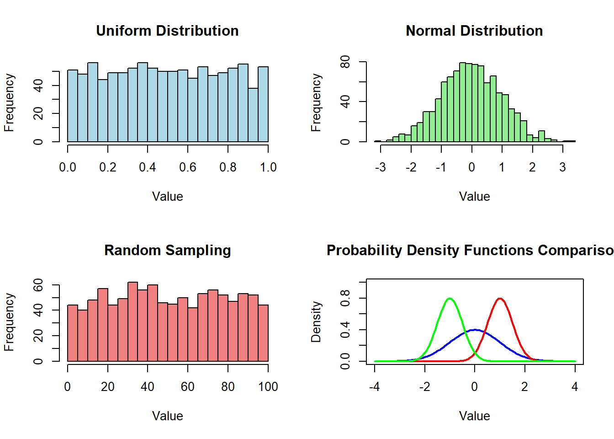
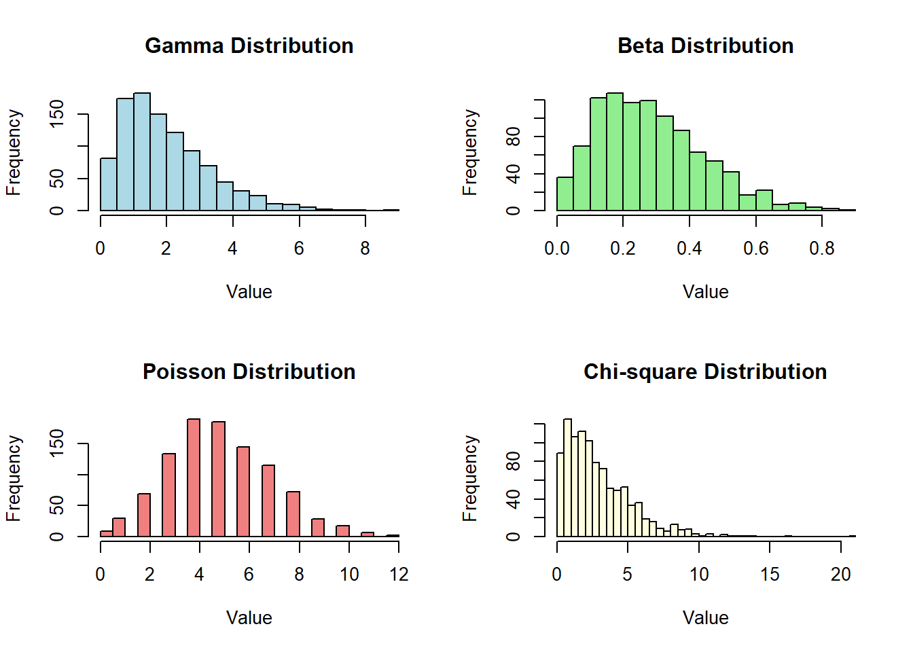
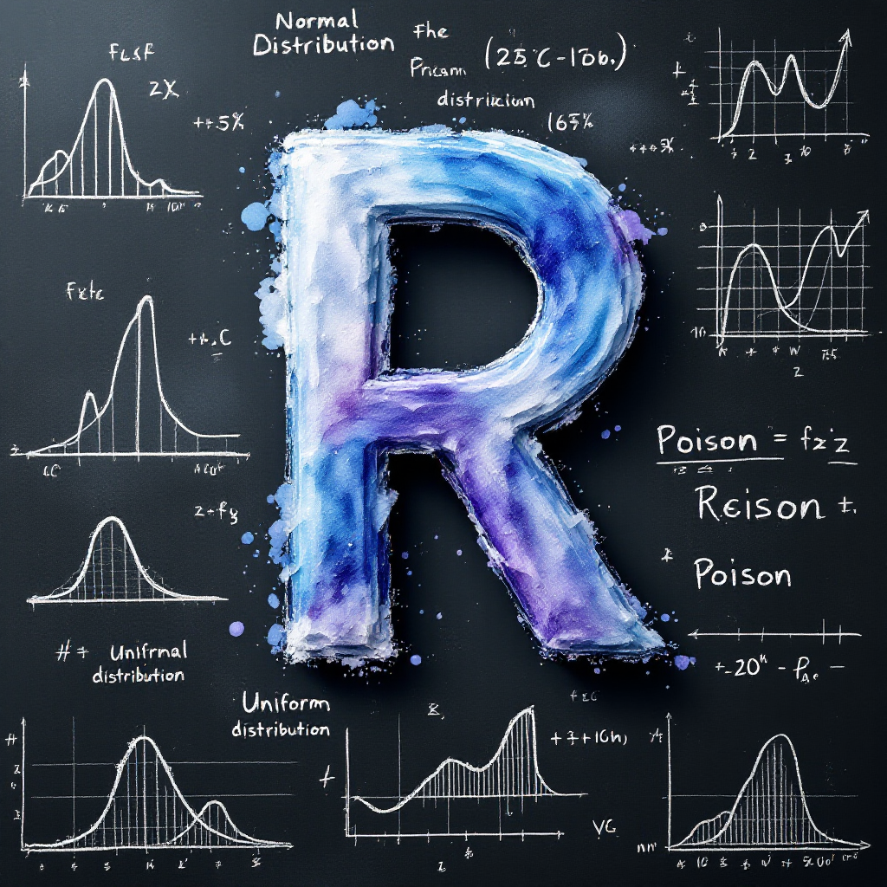

# Generate 5 random numbers between 0 and 1
runif(5)[1] 0.9631528 0.6473717 0.8502536 0.5132711 0.3478398Steven P. Sanderson II, MPH
May 26, 2025
Programming, Random Numbers in R, R Programming, Generate Random Data R, R Random Functions, Statistical Analysis R, R Normal Distribution, R Uniform Distribution, R Random Integer Generation, Monte Carlo Simulation R, Set Seed R, How to Generate Random Numbers in R for Data Analysis, Using rnorm and runif Functions in R Programming, Visualizing Random Number Distributions in R, Best Practices for Random Number Generation in R, Reproducibility in R Random Number Generation Techniques
Random number generation is a basic skill for statistics, simulations, and data analysis in R. This guide should help you get famililar with some of those basics.
Random number generation is a basic component of many statistical analyses, simulations, and data science workflows in R. Whether you’re running Monte Carlo simulations, creating sample datasets, or implementing statistical algorithms, knowing how to generate random numbers efficiently is a valuable skill. This article will walk you through the most common methods for generating random numbers in R, with practical examples and visualizations to help you understand the concepts better.
R provides a powerful suite of functions for generating random numbers from various probability distributions. These functions are prefixed with r (for random), followed by the abbreviated name of the distribution. For example, rnorm() generates random numbers from a normal distribution, while runif() generates random numbers from a uniform distribution.
The runif() function generates random numbers from a uniform distribution where each number in the specified range has an equal probability of being chosen.
[1] 0.9631528 0.6473717 0.8502536 0.5132711 0.3478398The rnorm() function generates random numbers from a normal (Gaussian) distribution with a specified mean and standard deviation.
[1] 0.3169287 0.4466374 0.5926026 1.7024986 1.5120444The sample() function is perfect for generating random integers or sampling from a specific set of values.
When working with random numbers, it’s often essential to make your results reproducible. The set.seed() function allows you to get the same sequence of “random” numbers each time you run your code.
Visualizing random number distributions helps you understand their properties better. Here’s a comparison of different random distributions:
par(mfrow = c(2, 2))
# Uniform Distribution
hist(runif(1000, min = 0, max = 1), breaks = 30,
main = "Uniform Distribution", xlab = "Value", col = "lightblue")
# Normal Distribution
hist(rnorm(1000, mean = 0, sd = 1), breaks = 30,
main = "Normal Distribution", xlab = "Value", col = "lightgreen")
# Random Sampling
hist(sample(1:100, 1000, replace = TRUE), breaks = 30,
main = "Random Sampling", xlab = "Value", col = "lightcoral")
# Probability Density Functions Comparison
x <- seq(-4, 4, length.out = 100)
plot(x, dnorm(x), type = "l", col = "blue", lwd = 2, ylim = c(0, 1),
main = "Probability Density Functions Comparison", xlab = "Value",
ylab = "Density")
lines(x, dnorm(x, mean = 1, sd = 0.5), col = "red", lwd = 2)
lines(x, dnorm(x, mean = -1, sd = 0.5), col = "green", lwd = 2)
The plots above show:
R provides functions for generating random numbers from many other probability distributions. Here are some of the most commonly used ones:
Useful for modeling success/failure scenarios with a fixed number of trials.
Perfect for modeling the number of events occurring in a fixed time period.
R supports many other probability distributions, including:
[1] 1.0359106 0.4800262 1.5689731 0.9516189 1.6413728[1] 0.16886543 0.36738431 0.26962401 0.27630634 0.04024299[1] 0.8795775 2.8472263 1.0508443 1.6913313 1.1525831par(mfrow = c(2, 2))
# Gamma Distribution
hist(rgamma(1000, shape = 2, scale = 1), breaks = 30,
main = "Gamma Distribution", xlab = "Value", col = "lightblue")
# Beta Distribution
hist(rbeta(1000, shape1 = 2, shape2 = 5), breaks = 30,
main = "Beta Distribution", xlab = "Value", col = "lightgreen")
# Poisson Distribution
hist(rpois(1000, lambda = 5), breaks = 30,
main = "Poisson Distribution", xlab = "Value", col = "lightcoral")
# Chi-square Distribution
hist(rchisq(1000, df = 3), breaks = 30,
main = "Chi-square Distribution", xlab = "Value", col = "lightyellow")
The plots above show the theoretical distributions (red lines) compared to randomly sampled data (histograms) for:
If you don’t set a seed, you’ll get different random numbers each time you run your code, which can make debugging difficult and results irreproducible.
When using parallel processing, setting the same seed in each parallel worker can lead to correlated random numbers.
Using the wrong distribution for your data can lead to incorrect results.
Choose the distribution that best models your data:
rnorm() for continuous, symmetric datarpois() for count datarbinom() for binary outcomesNow, let’s put your knowledge into practice with a simple exercise.
Exercise: Generate 1000 random numbers from a normal distribution with mean 50 and standard deviation 10. Then calculate their mean and standard deviation to verify they are close to the expected values.
rnorm, runif)set.seed() to make your random numbers reproduciblerunif() for uniform distributionrnorm() for normal distributionsample() for random samplingrbinom() for binomial distributionrpois() for Poisson distributionRandom number generation is a powerful tool in R programming that enables everything from simple sampling to complex statistical simulations. By understanding the different distribution functions and their parameters, you can generate the precise type of random data you need for your analyses.
Now that you have a solid foundation in generating random numbers in R, try incorporating these techniques into your next data analysis project or statistical simulation. Remember to set a seed for reproducibility, choose the appropriate distribution for your data, and visualize your results to ensure they meet your expectations.
Ready to level up your R programming skills? Share this article with your colleagues and let us know in the comments which random number generation techniques you find most useful in your work.
If you don’t set a seed using set.seed(), R will generate different random numbers each time. To get reproducible results, always set a seed at the beginning of your script.
Use the sample() function to generate random integers. For example, sample(1:100, 10) generates 10 random integers between 1 and 100.
You can use the sample() function with custom probabilities. For example:
This will generate random numbers from 1 to 6, with 6 being five times more likely to appear than the other numbers.
When sampling with replacement (replace = TRUE), the same value can be selected multiple times. Without replacement (replace = FALSE), each value can only be selected once.
Use visualization techniques like histograms, density plots, or Q-Q plots to verify your random numbers follow the expected distribution:
Happy Coding! 🚀

You can connect with me at any one of the below:
Telegram Channel here: https://t.me/steveondata
LinkedIn Network here: https://www.linkedin.com/in/spsanderson/
Mastadon Social here: https://mstdn.social/@stevensanderson
RStats Network here: https://rstats.me/@spsanderson
GitHub Network here: https://github.com/spsanderson
Bluesky Network here: https://bsky.app/profile/spsanderson.com
My Book: Extending Excel with Python and R here: https://packt.link/oTyZJ
You.com Referral Link: https://you.com/join/EHSLDTL6